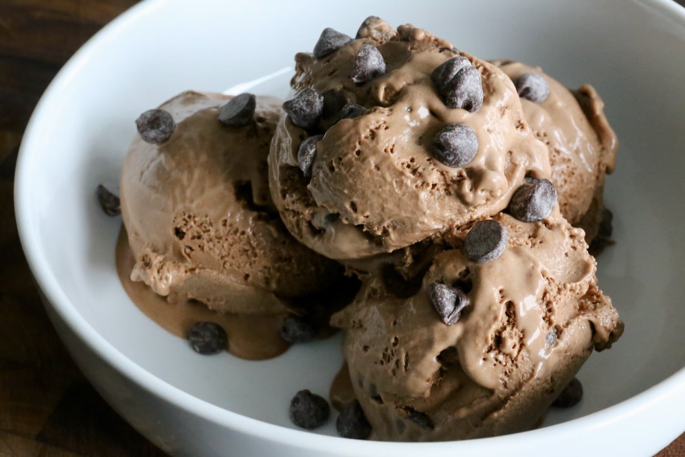

The Ultimate Chocolate Escape
Indulge in a chocolate lover's dream. This decadent treat starts with a velvety, ultra-creamy dark chocolate ice cream base, crafted with premium cocoa for a deep, sophisticated flavor.
But we didn't stop there. Folded generously throughout are pockets of rich, bittersweet chocolate chips , offering a satisfying, crunchy contrast to the smooth-as-silk ice cream. Every single scoop delivers a double dose of pure, unadulterated chocolate bliss.
Why You’ll Love It:
Ingredients
Prepration Method
In a large bowl, whisk together 1 can (14 oz) sweetened condensed milk, ½ cup Dutch-process cocoa powder, 1 tsp vanilla extract, ½ tsp espresso powder, and a pinch of salt until completely smooth and thick.
In a separate cold bowl, beat 2 cups cold heavy whipping cream with a hand mixer or stand mixer until stiff peaks form (it should hold its shape like cool whip).
Gently scoop about a third of the whipped cream into the chocolate mixture and stir to lighten it up. Then, add the rest of the whipped cream and ½ cup chopped chocolate chips. Fold very gently with a spatula just until combined so you don't deflate the air.
Pour the mixture into a 9x5-inch loaf pan or airtight container. Smooth the top, cover tightly, and freeze for at least 6 hours before scooping.